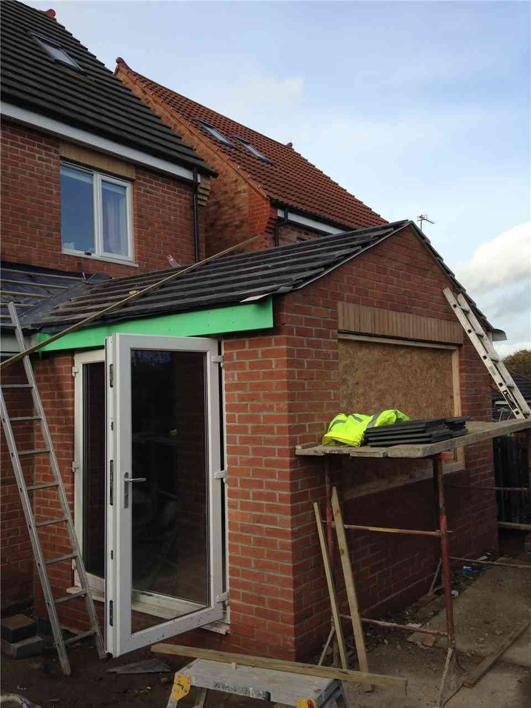
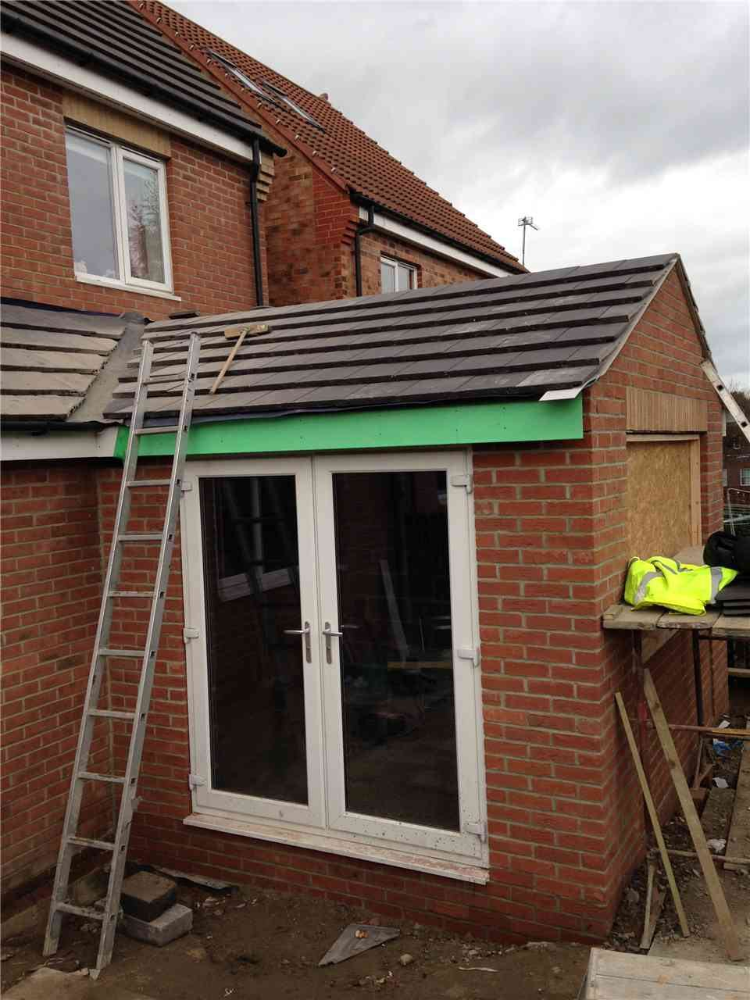
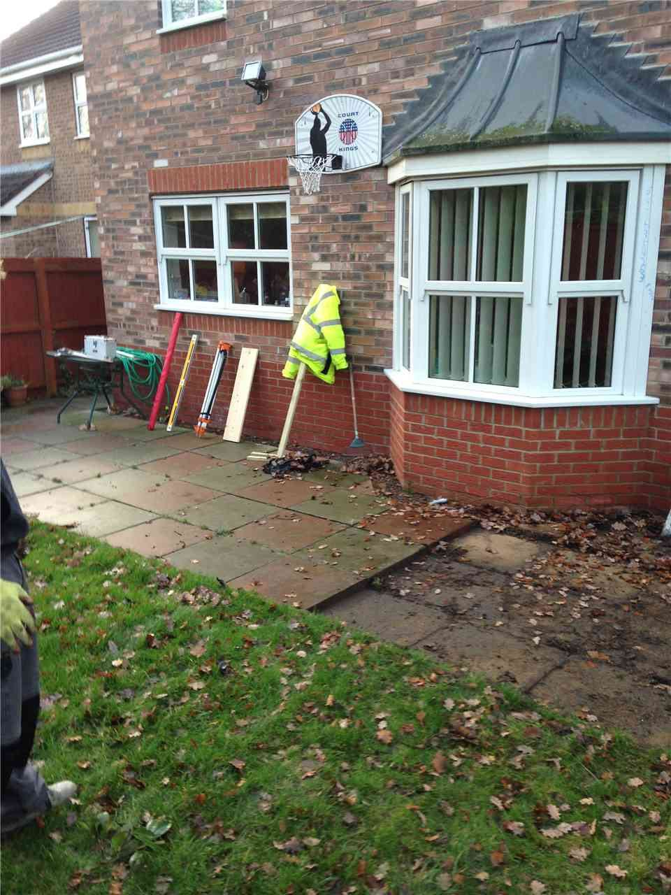
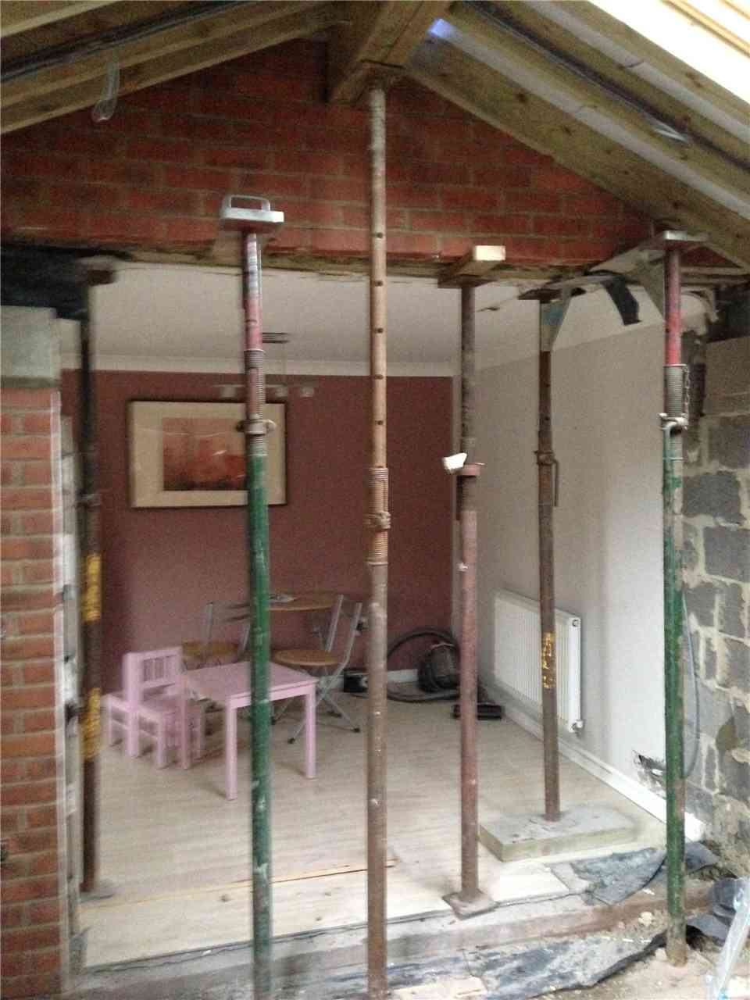
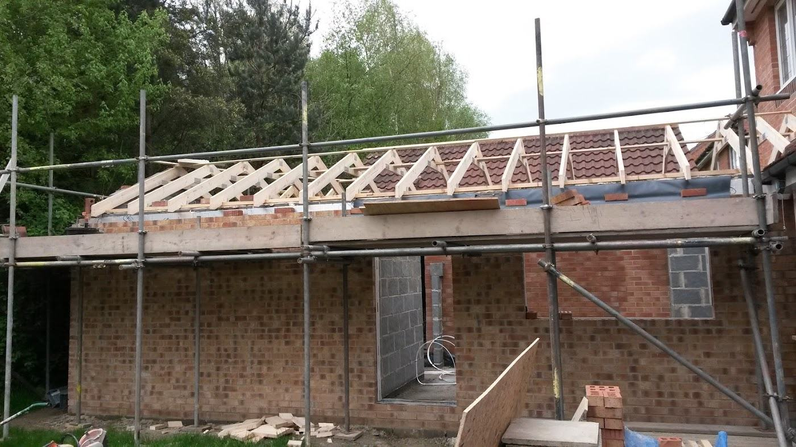
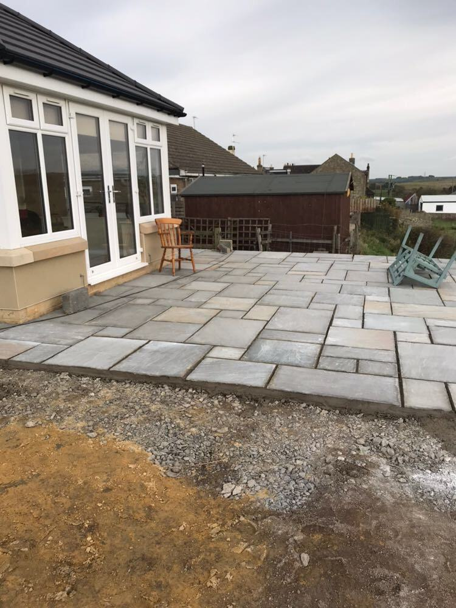

Single-storey, two-storey and kitchen extensions, orangeries and porches.
We build rear, side and two-storey extensions, kitchen extensions, orangeries and porches. We handle the groundwork, the steelwork, the walls and the roof, and make sure the new part sits properly with the old.
Brick, stone or render chosen to match the house, with the roof line worked out properly.
Smaller jobs too: porches, bay windows and orangeries.






Tell us what you are planning and your postcode. Free estimates and advice. ⚠ Your call-back promise, e.g. we ring you back the same working day